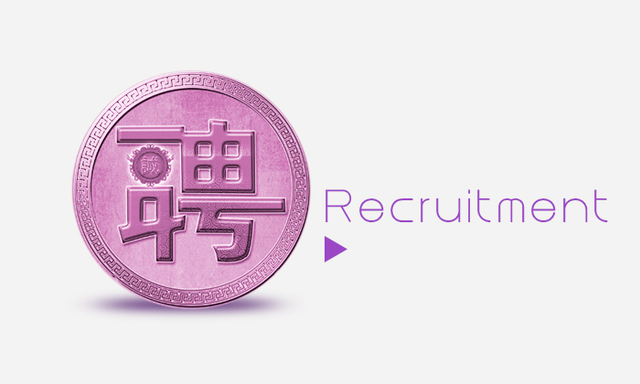

招聘信息尚缺岗位：皇宫婚纱摄影诚招公关媒专员
销售部：销售总监、美编顾问
技术部：客服经理、客服主管、流程员
行政部：会计助理、人事专员、行政专员
招聘联系人
皇宫汉口店：中山大道908号VIP室，
联系人： 张琼、张曼
联系电话：15202730133
皇宫武昌店：武汉市洪水区武珞路675付1号皇宫婚纱摄影街道口车站旁
联系人：赵春
联系电话：18995549290
网络技术部分招聘职位要求
(附：官网其他职位信息)
网络技术部分：
公关媒介专员
学历要求：大专
工作经验：2年以上
职位描述：
1、建立、保持与相关单位的良好关系，协调与企业对外的关系；
2、负责市场活动的策划、组织工作；
3、制定各类公关活动方案，并组织协调各部门资源来推动方案的实施，确保方案在预算内及时完成，并达到相应的宣传目标；
4、根据传播进行执行反馈，分析宣传效果，为以后的传播工作提供参考；
5、文档的收集整理，建立公司宣传档案；
6、组织媒体活动。
任职资格：
1、专科以上学历，公关、新闻传播学、市场营销等相关专业优先；
2、两年以上公关及外联工作经验，或2年以上销售工作经验；
3、对公关理念有深刻的了解，在执行层面之上有自己的见解；
4、具备较强的市场意识，思维活跃，能根据业务需求策划和组织相关活动；
5、有较强的执行能力，能协调资源来完成计划并作出评估。
6、性格开朗，务实，沟通能力较强，同时能承受较大的工作压力。
平面设计
岗位职责：
1、负责公司平面广告、报媒广告、宣传手册、资料、公司网站页面设计等；
2、负责公司对外日常工作宣传及广告、产品、活动的平面设计；
3、负责公司网站活动页面设计及更新维护等；
4、负责公司VI、产品包装、广告宣传等的美术设计制作等；
5、其他相关美术设计方面的工作。
任职资格：
1、美术、平面设计相关专业，大学专科及以上学历；
2、有一年以上相关工作经验；
3、熟练使用Photoshop、CORELDRAW等常用设计制作软件；
4、具备团队合作精神，有很强的上进心，能承受工作带来的较大压力。
SEO专员
学历要求：本科
工作经验：不限
职位描述:
1、优化网站关键字，时刻进行跟踪，调整优化方式；
2、熟练运用搜索引擎、博客、微博、社区、网络联盟等网络推广手段；
3、分析某些网站，发掘影响其在Google、Baidu网站上排名靠前或靠后的因素；
4、掌握国内外互联网和SEO/SEM的最新发展动态，更新网站推广策略；
5、监测网站各项数据的变化，进行分析判断后，根据结论制定解决方案；
6、有过网页美工经验者或熟练使用Photoshop、FLASH等工具软件者优先。
任职资格：
1、有网络推广经验，seo经验，熟悉搜索引擎优化的原理和策略。有过影楼行业优化经历优先。（其他行业有流量业绩者优先）
2、熟练运用搜索引擎、有成熟的推广思路和操作手段，并经过实际验证，为旅游企业服务经验者优先考虑；
3、熟悉网站制作语言（asp.net、c#、javascript、css-div、sql数据库等优先），可独立完成网站制作者优先；
4、理解需求，制定网络推广营销策略；
5、具有较高的工作热情，高度的责任感、良好的职业道德与团队协作精神（优秀应届生也可）。
网络编辑
岗位职责:
1、负责网站相关专题、活动、栏目的文章编写；
2、熟练使用Photoshop基础功能；
3、收集行业和公司新闻资料和信息，整理发布新闻，汇总专题资料；
4、熟练操作网站后台，包括上传文章、样片等内容；
5、有一定原创能力及策划能力，可独立完成稿件编辑任务。
岗位要求：
1、做事仔细认真，计算机日常文字文档操作熟练；
2、中文功底扎实，知识面广，有良好的语言表达能力和协调沟通能力；
3、掌握网络基本知识，会使用常用办公软件；
4、工作认真细致，责任心强，有较好的信息采编能力；
5、具有团队合作精神，性格开朗，吃苦耐劳，工作踏实；
6、学历、性别不限，公司更重视您的能力。
皇宫婚纱摄影诚招摄影师
学历要求：中专
工作经验：两年以上
职位要求：
1、具有较强的摄影技术和审美观、以及分析事物的洞察力；
2、富有创新意识和较强的感染力；
3、根据不同客人的性格和气质类型、心理需求，提出合理的拍摄建议；
4、掌握当前的时尚潮流元素和欣赏角度，为顾客做美姿指导。
5、中专以上学历，过硬的摄影技术和审美观，2年以上工作经验者优先；
6、良好的语言沟通能力，要求普通话标准；
7、具有良好的个人修养和形象，较强的责任心；
8、有较强的创新能力和思维敏捷性。
皇宫婚纱摄影诚招摄影助理
学历要求：高中
工作经验：不限
职位要求:
1、要求有摄影基础优先，形象良好，能吃苦耐劳，服务意识强；
2、男女不限，要求责任心强，工作认真、细致；
3、如果个人基础良好，能熟悉我公司流程，即有晋升摄影师的机会。
影楼网络销售
岗位职责：
1、负责搜集有影楼消费意向客户的资料并进行沟通，开发新客户；
2、通过企业QQ等聊天工具与客户进行有效沟通，了解客户需求, 寻找销售机会并完成销售业绩；
3、定期与影楼消费客户进行沟通和回访，挖掘已消费客户的人脉，增加转介绍业绩。
任职资格：
1、20-30岁，打字速度要求40字/分钟，熟练操作Word,excel等办公软件；
2、对影楼销售工作有较高的热情，善于网络在线沟通。
3、具备较强的学习能力和优秀的沟通能力，有影楼销售经验者优先录取；
4、性格坚韧，思维敏捷，具备良好的应变能力和承压能力；
5、有敏锐的市场洞察力，有强烈的事业心、责任心和积极的工作态度。
皇宫婚纱摄影诚招门市销售
学历要求：高中
工作经验：一年以上
职位描述：
负责来店客人的接待工作，推荐款式，达成订单，后续品检及服务追踪工作。
职位要求：
1、年龄18岁-35岁，高中以上学历，有无工作经验皆可，有带薪培训；
2、婚纱影楼、婚纱摄影、礼服馆、工作室相关销售达1年以上工作经验者优先；
3、积极外向，能够长期工作者优先. 品貌端正，口齿伶俐，普通话标准；
4、品行端正，能吃苦耐劳，具有良好的敬业和团队合作精神,身体健康；
5、具备较强的学习能力与执行能力；
6、工作细心、严谨，能吃苦耐劳；有良好的表达能力和沟通能力。
皇宫婚纱摄影诚招化妆师/造型师
学历要求：中专
工作经验：两年以上
职位描述：
1、为顾客提供拍照当天的妆面造型服务；
2、根据不同客人的性格、气质类型和心理需求，提出合理的妆面造型建议；
3、不断改进审美观念和欣赏角度，能够掌握当前时尚潮流元素，为顾客打造精致的妆面造型；
4、有一定的感染力，能为顾客创造愉悦的化妆环境。
任职资格：
1、中专以上学历，过硬的妆面造型技术和审美观；2年以上工作经验者优先；
2、良好的语言沟通能力，要求普通话标准；
3、具有良好的个人素质，较强的责任心；
5、上进心强，喜欢接受新鲜的事物。
皇宫婚纱摄影诚招化妆师助理
学历要求：高中
工作经验：不限
职位要求：
1、热爱化妆，有化妆基础优先；
2、具有良好的个人素质，较强的责任心；
3、上进心强，喜欢接受新鲜的事物。
皇宫婚纱摄影诚招礼服师
学历要求：不限
工作经验：不限
职位要求：
1、女性，年龄18-35岁，相貌端正，身体健康；
2、具备一定的沟通能力，吃苦耐劳，对工作认真仔细，责任心强，具有良好的团队协作精神；
3、具备相关工作经验者优先。
皇宫婚纱摄影诚招客服专员/助理
学历要求：中专
工作经验：一年以上
职位描述:
1、普通工作人员职位，协助上级执行一般的不需较多工作经验的任务；
2、了解客户需求，对其购买提供专业咨询；
3、客户受理和客户VIP开通；
4、恰当处理服务的故障和客户的投诉，控制消费者满意度的的跟踪及分析；
5、客户相关信息的录入管理，建立客户档案；
6、完成上级交给的其它事务性工作。
任职资格：
1、中专以上学历，有客户接待和服务经验者优先；
2、普通话标准，口齿清楚，声音甜美，优秀的语言表达能力和沟通能力；
3、较强的应变能力、协调能力，能独立处理紧急问题；
4、良好的服务意识、耐心和责任心，工作积极主动。
皇宫婚纱摄影诚招收银员
学历要求：高中
工作经验：一年以上
职位描述:
1、在收银主管的直接领导下，做好收费结算工作；
2、领取、使用、管理和归还收银备用金；
3、制作、打印、核对收银相关凭证；
4、汇总收据、发票，编制相关报表；
5、根据收款凭证登记现金和银行日记账，并将凭证送至会计；
6、妥善保管收银设备。
任职资格：
1、高中以上学历，会计或财务专业优先；
2、有会计证、有出纳工作经验者优先；
3、熟练操作计算机，形象气质佳、工作严谨；
4、具有良好的敬业精神，较强的学习能力和沟通能力。
皇宫婚纱摄影诚招文案
学历要求：本科
工作经验：两年以上
职位描述：
1、组织参与重要项目的创意构思、文案及客户提案, 给予前期提案、设计创意说明及后期结案报告等服务；
2、在策划部经理指导下，执行并监督所负责项目的创意构思和文案；
3、稿件思路清晰，能够完成稿件写作思路规划；
4、协助项目经理进行创意提案，保证工作的顺利推进；
5、独立撰写各类稿件（新闻稿、综述稿、评论稿、专访稿等）、策划方案、报告等。
任职资格：
1、新闻学、传播学、中文、经济管理类相关专业，大学本科以上学历；
2、两年年以上市场策划及文案工作经验，有整合推广成功案例者优先；
3、能够准确捕捉产品亮点，具备恰如其分的文字表现能力；
4、熟悉专业创意方法，思维敏捷，洞察力强，文字功底扎实，语言表达能力强；
5、能独立完成项目、广告等推广文案的撰写。
皇宫婚纱摄影诚招策划经理
学历要求：本科
工作经验：三年以上
职位描述：
1、高层管理；
2、负责所辖产品的创意策划、文案撰写；
3、负责运营策划方案的整体设计，市场策划及宣传设计；
4、安排人员参与市场调查与信息情报的搜集整理此岗位需500人左右企业的成功企业策划人士。
任职资格：
1、本科以上学历，三年以上策划经验；
2、具有良好的市场分析和创新思维能力，善于撰写活动策划方案；
3、熟练使用各类办公软件，有很强的文字功底；
4、具有较强的适应能力以及良好的沟通合作能力；
5、具备良好的职业素养及团队合作精神，能在重压下工作。
皇宫婚纱摄影诚招营运经理
学历要求：大专
工作经验：四年以上
职位描述：
1、在总经理的领导下，负责企划部的部门建设与业务管理。负责项目的企划管理。督导策略执行的具体落实，确保策划的质量和时效；
2、根据企划、营销工作的阶段性目标，依据总经理及上级领导的要求做好区域年度、月度企划、营销工作计划的编制工作以及活动结束后的汇报工作；
3、促销活动的整体策划，方案拟定，包括各类文案等的审定。营销活动的评估和总结；
4、重点负责公司市场营销策略的研究、策划、组织与实施管理，不断追踪国内外先进的营销理念和营销技巧、收集和剖析案例并与公司比较，对公司营销战略和策略进行调整，提出有价值的建议；
5、负责研究制定公司品牌规划方案，并根据公司决策组织资源投入及品牌管理。
6、负责公司企划工作的全面掌控，制定和完善公司各阶段的营销策划和具体实施方案，包括组织、参与企划方案的制定；媒体活动计划的制定；完成公司营销推广项目的整体策划创意、设计与提报、结案评估。
任职资格：
1、27-40周岁，大专及以上学历；
2、4年以上营销、策划、推广工作经验，本岗位2年以上，了解SEO、SEM及数据流量分析统计；
3、熟悉网络营销及实体营销策划流程及开发运作流程；
4、对销售产品规划设计、市场定位、项目包装、策划推广等专业流程具有良好的专业水平；
5、具备优秀的团队管理能力和领导才能，思维敏锐，有独立创新的见解及出色的文字驾驭能力。
皇宫婚纱摄影诚招系统管理员/网络管理员
学历要求：大专
工作经验：三年以上
职位描述：
1、负责公司网络的安装和网络系统的维护与升级，公司计算机硬件和软件安装与调试及维护；
2、负责网络通信传输的畅通，监测公司网络系统的运行状态，并进行维护，确保其正常运作，包括交换机，防火墙，文件、邮件服务器和域服务器的管理；
3、熟悉系统软件结构和硬件的配置，掌握排除一般软硬件故障的方法，解决日常网络问题及电脑的安全设置，确保各部门办公设备正常运作；
4、优化网络系统，规划调整设备配置，完成路由器/交换机/防火墙的配置施工，参与服务器与应用系统的管理，确保系统的安全。
5、有网站日常维护工作经验者优先。
任职资格：
1、计算机或IT相关专业，大专或大专以上学历；
2、3年以上的企业网络管理、服务器网管工作经验，能对网络故障进行快速定位和排除；
3、熟悉PC机硬件维护，各种网络设备基本维护；对服务器、路由器、防火墙能够熟练操作及维护，具备故障诊断和处理能力；
4、良好的服务意识、耐心和责任心，工作积极主动，良好的表达能力和较强的沟通能力。
皇宫婚纱摄影诚招公关外联专员
学历要求：大专
工作经验：2年以上
职位描述：
1、建立、保持与相关耽误的良好关系，协调与企业对外的关系；
2、负责市场活动的策划、组织工作；
3、制定各类公关活动方案，并组织协调各部门资源来推动方案的实施，确保方案在预算内及时完成，并达到相应的宣传目标；
4、根据传播进行执行反馈，分析宣传效果，为以后的传播工作提供参考；
5、文档的收集整理，建立公司宣传档案；
6、组织媒体活动。
任职资格：
1、专科以上学历，公关、新闻传播学、市场营销等相关专业优先；
2、两年以上公关及外联工作经验，或2年以上销售工作经验；
3、对公关理念有深刻的了解，在执行层面之上有自己的见解；
4、具备较强的市场意识，思维活跃，能根据业务需求策划和组织相关活动；
5、有较强的执行能力，能协调资源来完成计划并作出评估。
6、性格开朗，务实，沟通能力较强，同时能承受较大的工作压力。
皇宫婚纱摄影诚招销售主管/销售经理
学历要求：大专
工作经验：2年以上
职位描述:
1、销售人员职位，在上级的领导和监督下定期完成量化的工作要求，并能独立处理和解决所负责的任务；
2、开发客户资源，寻找潜在客户，完成销售目标；
3、签定销售合同，指导、协调、审核与销售服务有关的帐目和记录，协调运输等事务；
4、解决客户就销售和服务提出的投诉；
5、从销售和客户需求的角度，对产品的研发提供指导性建议。
任职资格：
1、专科及以上学历，市场营销等相关专业；
2、需要有婚纱摄影行业2年以上同等岗位工作经验，有销售支持经验者优先；
3、具备较强的销售技巧及销售经验，市场营销经验及渠道拓展经验；
4、具有较强的沟通能力，组织、协调能力和团队管理能力。
5、具有很强的事业心。
皇宫婚纱摄影诚招美术编辑/设计师/修片员
学历要求：大专
工作经验：不限
任职资格:
1、具有美术相关专业背景；
2、女性、年龄18—26岁，艺术感强；
3、熟练掌握photoshop、排版等软件，工作效率高；
4、有平面设计基础者优先。
本岗位接受美术或平面相关专业实习生和应届生。